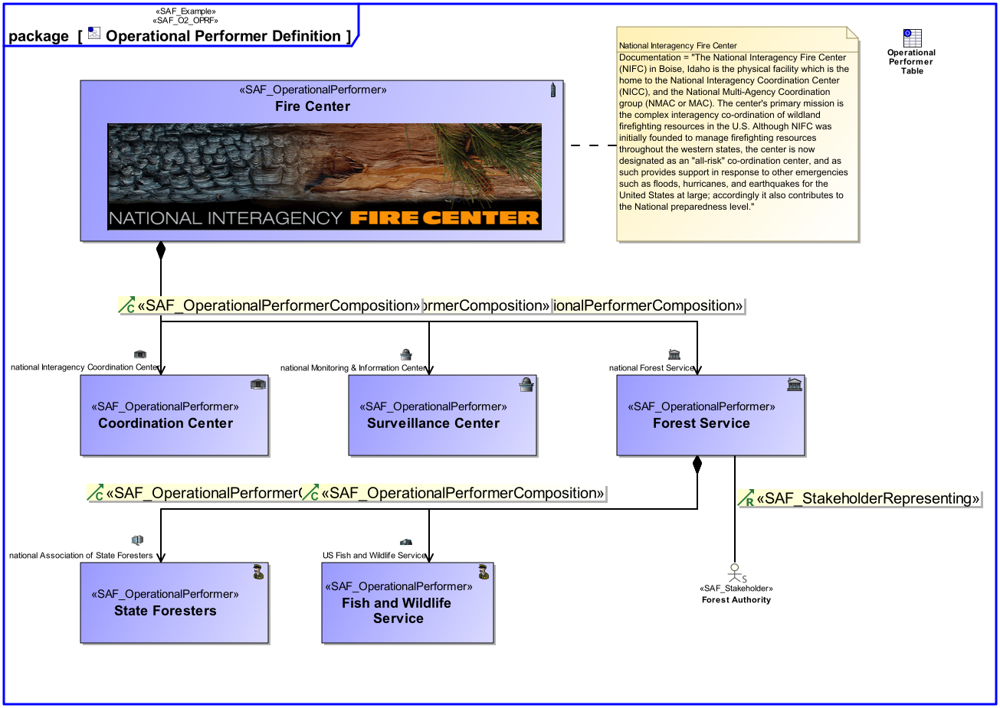

O2_OPRF Operational Performer Viewpoint
| Domain | Aspect | Maturity |
|---|---|---|
| Operational | Taxonomy & Structure |


The Operational Performer Viewpoint represents the taxonomy of the identified Operational Performers, if existing and relevant for the understanding of the operation of the intended solution.
The Operational Performer Viewpoint supports the “Business or Mission Analysis Process” activities of the INCOSE SYSTEMS ENGINEERING HANDBOOK 2015 [§ 4.1] and contributes to the problem or opportunity statement.
A block definition diagram (BDD) featuring Operational Performers. and their relations in terms of decomposition or generalization at a level of detail required for problem understanding and analysis. Note: Identified Stakeholders are related to Operational Performers if appropriate.
A table containing operational performers, their inter relations and relations to stakeholders
The following Stereotypes / Model Elements are used in the Viewpoint: